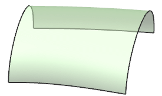

打开 ffm2_intro2。
图形窗口中显示出一个自由曲面的片体。
这个通过曲线网格曲面使用了三个主曲线以及两个横截面曲线来创建。

选择首选项→建模。
点击常规选项卡。
查看对话框的内容。
注意体类型、公差以及网格线。
注意到网格线被设置为0和0，因此创建的曲面在静态线框显示样式时将不显示网格线。
体类型选项用于通过曲线网格、通过曲线组、扫掠、截面以及直纹。
体类型选项也可以在创建或编辑这些特征时使用。
现在，将体类型选项保留为实体。